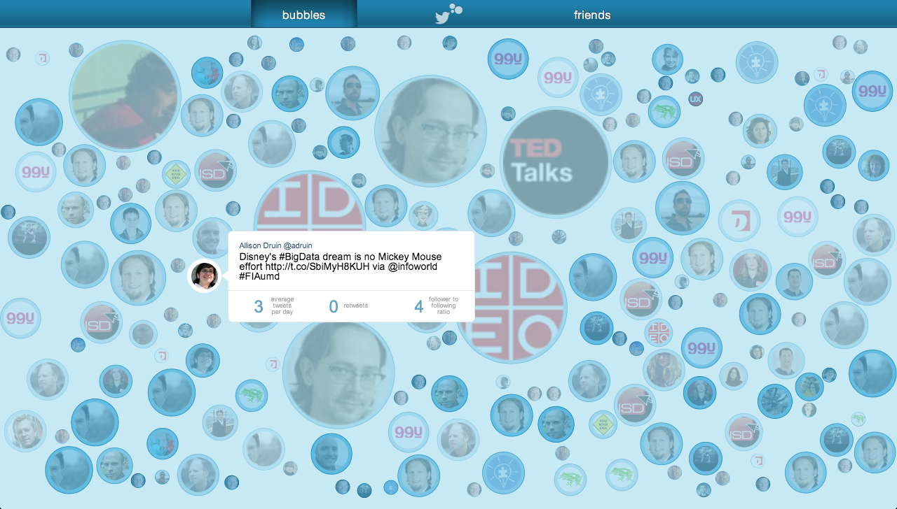
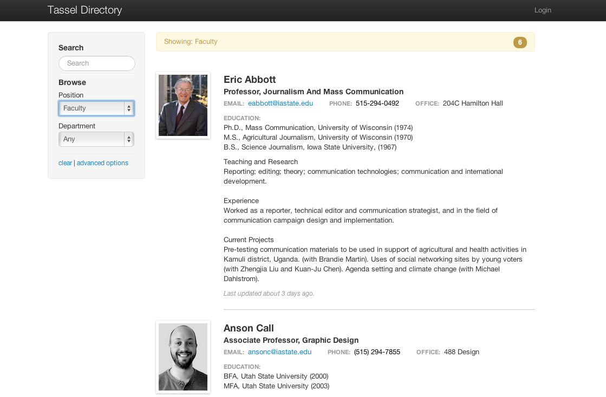
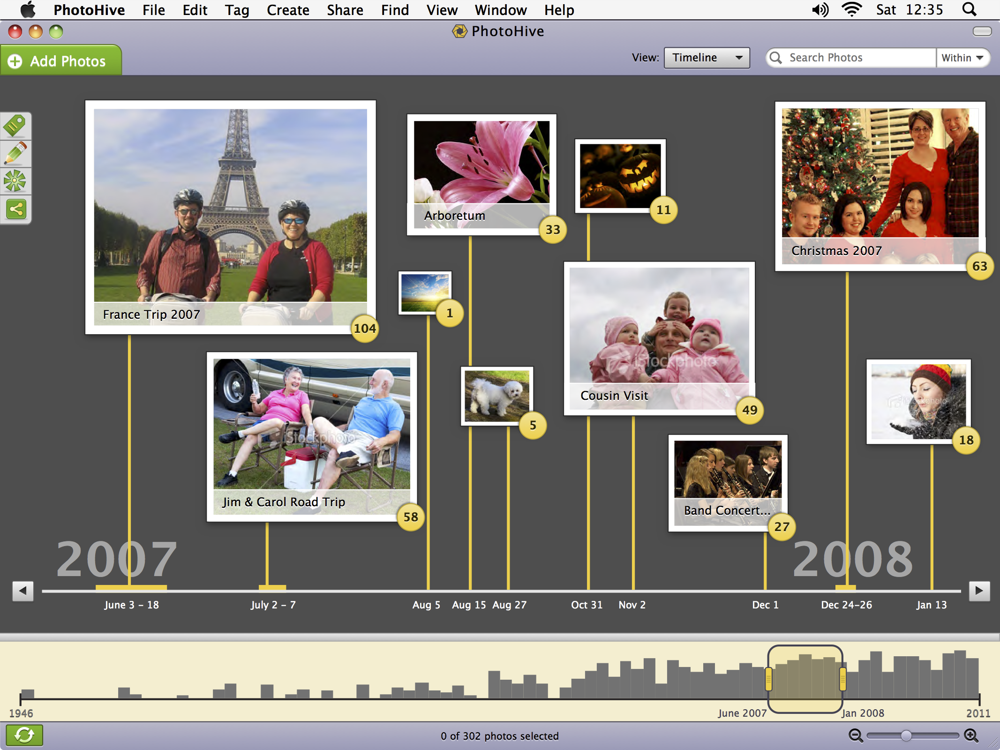

Website evaluation and scanning by students with Autism Spectrum Disorders
Diagnoses of Autism Spectrum Disorders (ASD) are becoming more prevalent, both in the US and the world. The U.S. Center for Disease Control and Prevention estimates that about 1 in 88 eight-year-olds today have ASD (2012). Despite autism’s frequent appearance in the media as a childhood disease, children with the disorders have nearly typical life expectancies and live well through adulthood (Shavelle & Strauss, 1998). As the Internet becomes increasingly prevalent and is necessary to fully participate in today’s society, it is critical for people with ASD to be able to access and use online content and services. While there is a plethora of anecdotal evidence to indicate successful outcomes, there is very little scientific research that examines the specific effects, opportunities and risks of Internet usage for people with ASD.
This pilot study compared students’ cognitive traits associated with ASD, as reported in a survey, to their performance in a lab study that asked them to scan and evaluate web content. By observing eye-tracking data and differences in responses between participants, this study aimed to quantify key differences between content evaluation between individuals with or without autism. Participants were recruited from the population of 18-24 year old students attending Iowa State University.
The results suggested little to no difference in the ways that participants with or without ASD scanned or evaluated websites. Correlations between the eye fixation metrics and Autism Quotient scores were near zero. Other classifying factors like the Style of Processing score and gender had larger correlations with fixation metrics. The ability of participants to deduce purpose, advertising, and authorship from the site’s design did not vary between the control group and the group with ASD. Previous work has shown that people with ASD have an affinity for using the Internet. This study demonstrates people with ASD have an equal opportunity to successfully evaluate and scan websites as their neurotypical peers, even at a subconscious, eye-movement level. These findings suggest that the Internet makes an effective content delivery platform for young adults with High-Functioning Autism or Asperger’s who are able to attend college.

Twitter Bubbles
Emphasizing the lesser heard voices
With 36% of all the Internet’s worldwide users1, and an average of 340 million Tweets sent per day (as of March 2012)2, Twitter can safely be called a noisy place. The Twitter firehose (a term used in their documentation3) inundates users with a constant stream of the latest Tweets from the people they follow. Buried in this stream could be important announcements from friends, breaking current events, and relevant, interesting articles. The lists feature, introduced in 2009, helps sort the flow a little, however, the problem remains that the prolific Tweeters obscure the more reserved, and the mundane often drown out the profound.
This webapp experiments in cutting through the noise of Twitter and emphasizing the lesser heard voices, important events, and worthwhile links.

Tassel
Promoting connections through an academic directory framework.
Communication and connection between individuals within an organization is an essential component of success. This is even more true in academic organizations, where collaboration between diverse minds is critical for rich research and innovation.
Problem
In interviews and surveys conducted during the Iowa State HCI website redesign challenge, students, staff and faculty revealed that the directory pages were one of the sole reasons they used the site. Students used it to look up contact information for professors and peers; faculty used it to find both student and colleague collaborators with given skills and interests; prospective students also use it to find faculty sponsors who have matching research interests.
Though this is a frequently used feature, it is extremely difficult to maintain. Student and faculty information is contained in separate databases with different management interfaces. The photos that go with each entry are in a separate system all together. Individuals email their information at the start of their involvement to a central administrator, who must manually edit this information. This information is limited to contact information and a short biography if the individual provides one. This biography is the only way to determine others research interests and skills, something a variety of users talked about doing.
Solution
Tassel is an easily managed, fully searchable academic directory. Individuals can access and edit their own information, through a module in the site’s content management system, keeping it up to date and relevant. The administrator can quickly add people, approve changes, and make batch modifications all in one location. On the site, visitors will be able to search and filter through people, finding the information they desire quickly.

PhotoHive
Transforming photo organization from a chore into a nostalgic journey.
Photo organization software is designed to take advantage of the meta-data all modern, digital cameras include in image files. Even if that data is missing, most assume that each batch you import can be assumed to have happened
at the same time or place. But what about the boxes of prints documenting the years before digital cameras? After the Herculean effort to digitize these memories, shouldn’t there be an easy way to make sense of the chaos?
PhotoHive emerged out of my frustration with existing software's methods of cataloging huge photo collections with no existing meta-data.